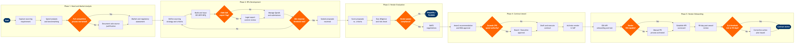

| Step | L4 Step Name | KPI / Target | Pain Point / Risk | Gate |
|---|---|---|---|---|
| 1.1 | Capture and validate sourcing requirement | Sourcing request processed within 2 business days of submission | Airlines carry highly fragmented procurement across MRO, IT, fuel, catering, and ground handling — category ownership disputes between Finance and Operations delay sourcing initiation by 3–7 days on average | |
| 1.2 | Conduct spend analysis and category benchmarking | Spend data coverage ≥95% of addressable spend in category; analysis completed within 3 business days | Fuel, MRO, and ground handling spend frequently sits in legacy cost centers not yet mapped to SAP Ariba Analytics, creating data blind spots that understate category spend by up to 20% | |
| 1.3 | Assess supply market and regulatory landscape | Market assessment completed within 5 business days; ≥3 qualified alternative suppliers identified per category | Aviation-specific supplier pools (e.g. FAA Part 145 repair stations, EASA-approved MRO shops) are narrow — market power asymmetry severely constrains negotiation leverage; fewer than 3 qualified suppliers in many technical categories | ⚠ |
| 2.1 | Define sourcing strategy and evaluation scorecard | Stakeholder sign-off on strategy within 3 business days; evaluation criteria weighted and approved prior to RFx issuance | Flight Operations and Maintenance stakeholders frequently bypass procurement to negotiate directly with preferred vendors, undermining competitive process integrity and creating maverick spend exposure | |
| 2.2 | Build and issue RFI/RFP/RFQ package to suppliers | RFP issued within 5 business days of strategy approval; minimum 5 qualified suppliers invited per event | Aviation technical specifications for avionics components and GSE routinely contain ITAR/EAR export control clauses requiring Legal pre-clearance — this delays RFP issuance by 3–10 business days and is not tracked within standard Ariba Sourcing workflow | |
| 2.3 | Manage supplier Q&A period and receive proposals | Proposal submission rate ≥60% of invited suppliers; addenda issued to all bidders within 24 hours of Q&A close | RFx deadline extensions to accommodate late supplier queries inflate sourcing cycle time by 5–15 days; SAP Ariba version-lock on RFP documents can prevent late addenda from being distributed to all bidders simultaneously, creating legal exposure | ⚠ |
| 3.1 | Score proposals against weighted evaluation criteria | Scoring completed within 5 business days of proposal deadline; inter-evaluator score variance <15% per criterion | Technical evaluators from Flight Operations and MRO departments frequently lack procurement training, producing non-compliant scoring narratives that expose the airline to bid protest risk and require rework cycles | |
| 3.2 | Conduct vendor due diligence and financial health check | Due diligence completed within 3 business days; zero unresolved critical risk flags at award recommendation stage | Post-pandemic supply chain fragility means key MRO and GSE suppliers carry elevated debt loads — D&B Paydex scores alone are insufficient for FAA-regulated suppliers, which also require manual verification of current FAA Repair Station Certificate (Form 8310-3) validity | ⚠ |
| 3.3 | Conduct best-and-final-offer (BAFO) round | Cost reduction vs. baseline ≥8% for competitive categories; BAFO round completed within 5 business days | Fuel hedging contracts and aircraft wet-lease negotiations require Treasury and Legal involvement that is not modelled in standard Ariba BAFO workflows — offline negotiation tracks create version control issues and audit trail gaps | |
| 4.1 | Prepare award recommendation and obtain DOA approval | Approval obtained within 2 business days for contracts within CPO authority; 100% of awards documented against DOA matrix | Multi-tier DOA matrices mean large MRO or IT contracts frequently require Board-level approval, creating 10–20-day bottlenecks when procurement timeline is driven by AOG (Aircraft on Ground) operational urgency | ⚠ |
| 4.2 | Draft, negotiate, and execute vendor contract | Contract execution within 10 business days of award; ≤2 redline round-trips on standard contract terms | Aviation-specific indemnity clauses (hull and liability coverage requirements for ground handlers, hangar keepers liability) routinely stall negotiations — the airline's aviation contract template library in SAP Ariba Contracts is often outdated versus current IATA Ground Handling Agreement (IGHA 2013) standards | |
| 4.3 | Activate vendor master record in SAP S/4HANA | Vendor master activated within 1 business day of contract execution; 100% contract data accuracy confirmed in Ariba Contracts | Duplicate vendor master entries in SAP S/4HANA (created by decentralised AP teams across hub stations without central Ariba governance) cause payment routing errors and complicate spend reporting; MDM cleanse required for ~15% of new vendor activations | |
| 5.1 | Execute vendor onboarding and EDI/API integration test | Onboarding completed within 10 business days of contract activation; EDI transaction error rate <1% in test phase | MRO suppliers (FAA Part 145 repair stations) and smaller catering vendors often lack EDI/API capability — manual PO and invoice processing inflates error rate and extends AOG parts procurement lead times by 24–48 hours | ⚠ |
| 5.2 | Establish vendor KPI scorecard and SLA baseline | Vendor scorecard published within 5 business days of go-live; ≥90% of contracted SLA fields populated at baseline | Procurement and Flight Operations use conflicting KPI definitions for vendor performance (procurement measures on-time delivery; Ops measures AOG-free rate) — SAP Ariba SPM module is not configured to capture operations-driven SLAs, requiring manual Tableau overlays that are inconsistently maintained | |
| 5.3 | Conduct 90-day post-award performance review | 90-day review completed on schedule for 100% of strategic vendors; vendor SLA achievement ≥85% at 90-day gate | High-volume catering and GSE contracts rarely receive structured 90-day reviews due to Category Manager bandwidth constraints — performance issues compound undetected until contract renewal, entrenching underperforming vendors and increasing switching costs | ⚠ |